Descrição do Problema
Problema de segurança nas ruas.
Pesquisas apontam a violência urbana como um fator de preocupação crescente em Londrina, segundo analises, existe violência em espaços urbanos da cidade, destacando como eventos violentos afetam a vida dos moradores.
Abordando especialmente a insegurança noturna, o impacto da criminalidade no lazer da população e as estratégias de policiamento adotadas, outro estudo relevante discute a relação entre desigualdade social e violência, sugerindo que áreas com menor infraestrutura urbana e acesso limitado a serviços públicos tendem a registrar maiores índices de criminalidade.
A ideia pode ser definida como uma oportunidade de soluções que aumentem a segurança e confiabilidade das pessoas em situações do cotidiano, as principais justificativas são as inseguranças, necessidade de ajuda rápida, dificuldade de comunicação em momentos de perigo, violência, criminalidade.
O desenvolvimento da hipótese é essencial para validar se o app de segurança social realmente atende a uma necessidade real da sociedade e se pode ser implementado de forma eficaz.
Justificativas
Estamos criando este aplicativo para ajudar as pessoas a se sentirem mais seguras ao andarem nas ruas, oferecendo recursos como alertas em tempo real, compartilhamento de rotas mais seguras. Nosso objetivo é proporcionar mais tranquilidade e proteção para todos.
Análise da Causa Raiz (5 Porquês)

 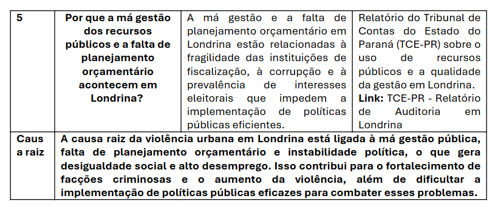
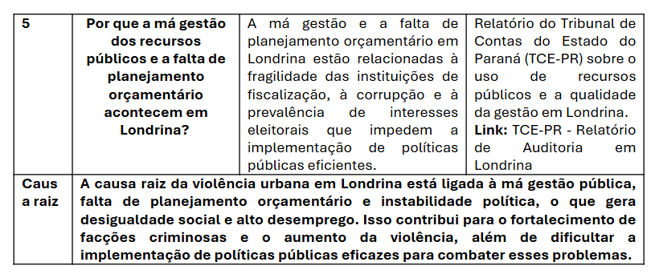
Mapa da Empatia
Proposta de Solução
Muitas pessoas enfrentam insegurança ao andar nas ruas, especialmente em locais com altos índices de criminalidade. A falta de informações em tempo real e a dificuldade em pedir ajuda rapidamente aumentam o risco de situações perigosas. Por isso queremos desenvolver um aplicativo de segurança pessoal que ofereça suporte em tempo real, permitindo que os usuários se sintam mais protegidos ao caminhar pelas ruas.
3. Funcionalidades Principais
✅ Botão de Emergência: Acionamento rápido para alertar contatos de confiança e autoridades sobre uma situação de perigo.
✅ Compartilhamento de Localização em Tempo Real: O usuário pode enviar sua localização para familiares ou amigos enquanto caminha.
✅ Mapa de Áreas de Risco: Indicação de locais com registros de incidentes para que o usuário possa evitá-los.
✅ Alertas Comunitários: Notificações sobre atividades suspeitas ou perigos na região, enviadas por outros usuários
✅ Acompanhamento Seguro: Possibilidade de solicitar que um contato de confiança acompanhe o trajeto do usuário virtualmente.
✅ Integração com Forças de Segurança: Canal direto para denúncias e solicitações de ajuda às autoridades locais.
4. Benefícios
🔹 Maior sensação de segurança para os usuários.
🔹 Resposta rápida em situações de risco.
🔹 Construção de uma rede de apoio comunitária.
🔹 Incentivo à colaboração entre cidadãos e autoridades.
5. Público-Alvo
Pessoas que circulam sozinhas à noite, principalmente mulheres, trabalhadores, estudantes e qualquer indivíduo que deseja aumentar sua segurança ao transitar pelas ruas.
Esse aplicativo visa proporcionar mais tranquilidade e bem-estar, reduzindo o medo e aumentando a proteção das pessoas no dia a dia.
Canvas do Projeto
Histórias do Usuário
🧍♀️ Como uma mulher que caminha sozinha à noite, quero poder compartilhar minha localização com alguém de confiança em tempo real, para que eu me sinta mais segura durante o trajeto.
🚨 Como um usuário em situação de risco, quero ter acesso a um botão de emergência de fácil acesso, para que eu possa pedir ajuda rapidamente.
🗺️ Como uma pessoa que não conhece bem a cidade, quero visualizar no mapa quais regiões são mais perigosas, para que eu possa evitar essas áreas ao planejar meu trajeto.
👥 Como um membro da comunidade, quero reportar problemas de segurança na minha rua (como falta de iluminação ou assaltos), para que outras pessoas e as autoridades fiquem cientes da situação.
🧭 Como um usuário preocupado com a segurança, quero acessar rotas alternativas indicadas por outros usuários, para que eu possa escolher o caminho mais seguro.
📩 Como um contato de confiança, quero receber notificações quando alguém que eu acompanho estiver em perigo ou fora da rota, para que eu possa tomar uma atitude rápida se necessário.
🏙️ Como morador de uma área com muitos incidentes, quero ver estatísticas e alertas da minha região, para que eu possa me planejar melhor e tomar precauções.
Diagramas e Fluxo de Negócio
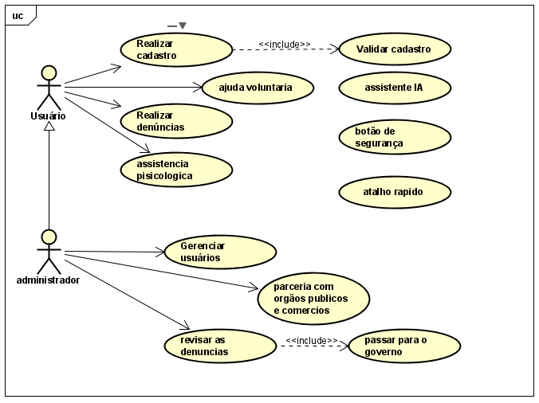User Stories
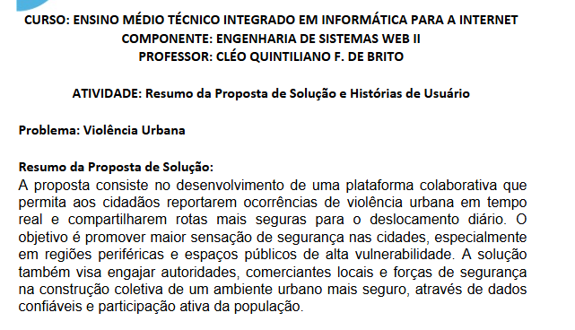 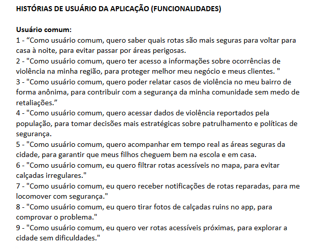 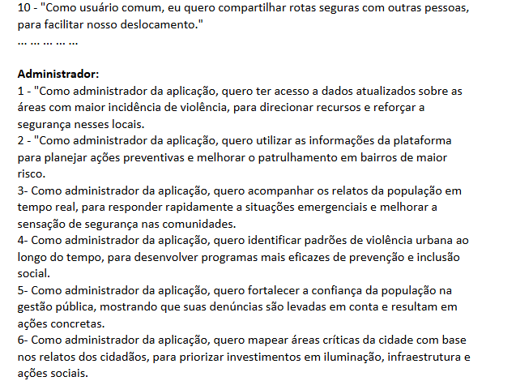 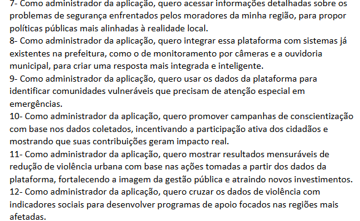Aplicativo Mulher Segura
 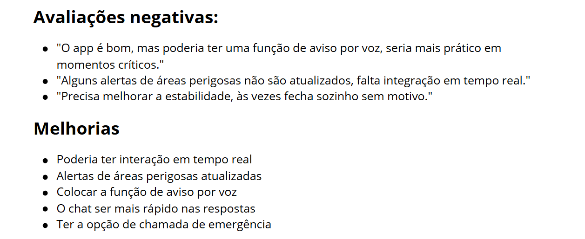
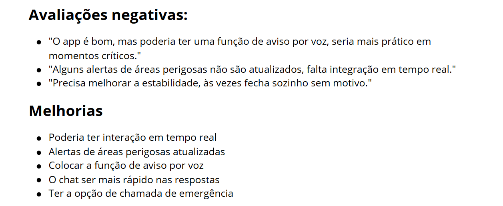
 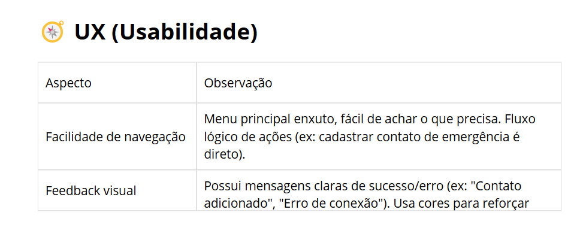
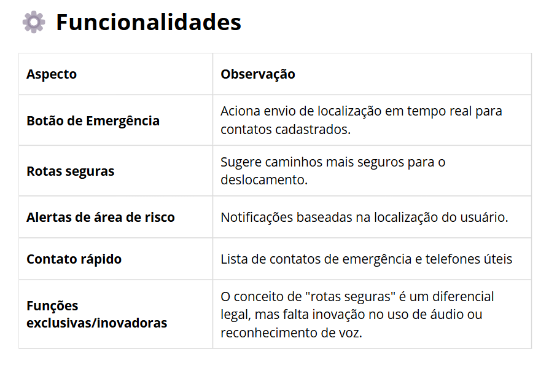
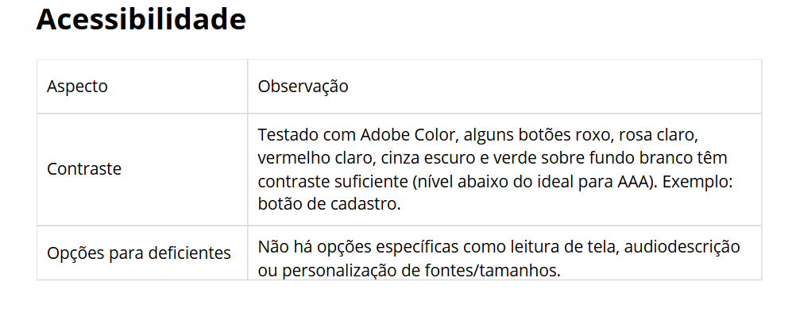
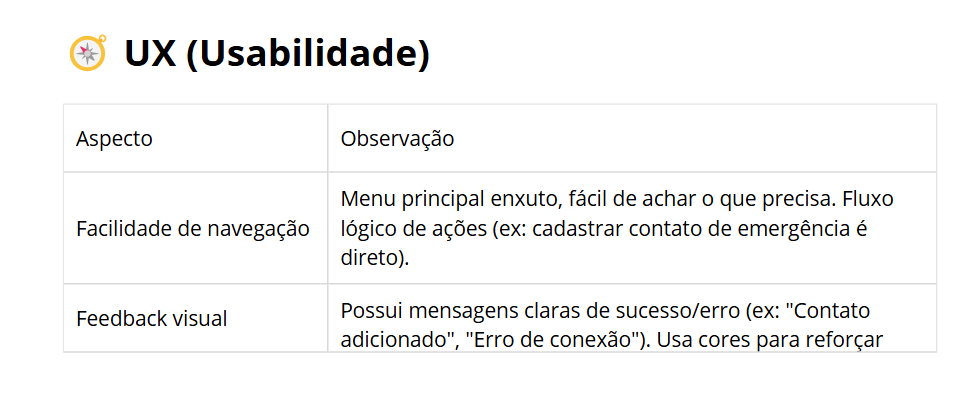
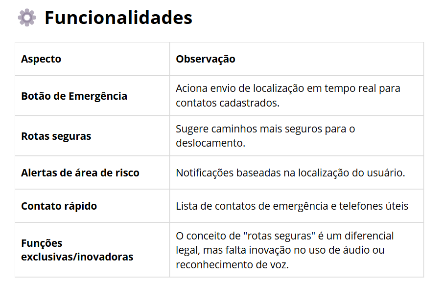
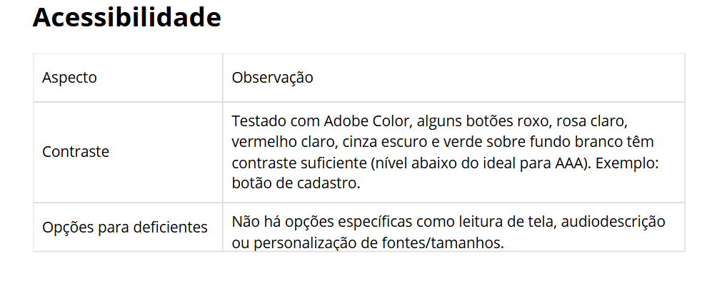